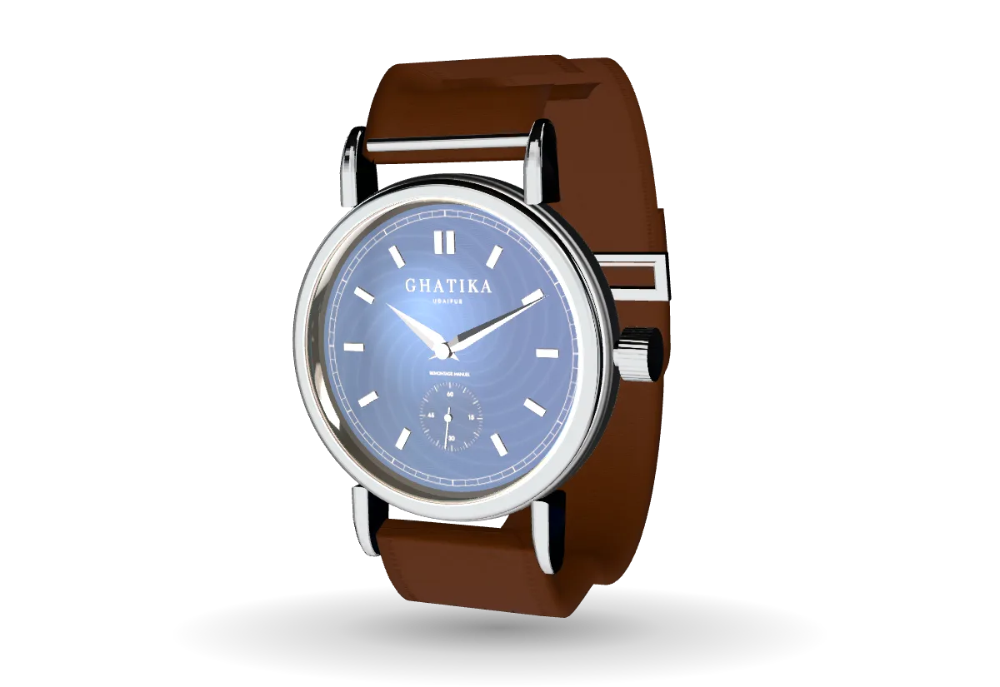

Udaipur · since 2019 · 300 watches a year
On the bench today: Prahar No. 0128
The hour, held by hand.
Ghatika makes three hundred mechanical watches a year in Udaipur. One watchmaker, thirty-eight days, every part finished by hand. Scroll, and take one apart.
-
Domed sapphire
A 1.1 mm dome, anti-reflective on the inside only, so the outside never scuffs cloudy.
-
Dauphine, faceted
Two facets per hand, polished on a tin wheel until they catch the light from any angle.
-
Lehariya guilloché
Cut in 120 passes on a 1931 rose engine. The waves come from the monsoon turbans of Mewar.
-
39 mm, 9.8 mm thin
Brushed flanks, a polished bevel, and lugs that curve down to meet the wrist.
-
Six beats a second
A free-sprung balance regulated in five positions, to within four seconds a day.
-
Finished by hand
Côtes de Genève, bevelled edges, blued screws and 21 rubies. Four hours of bevelling alone.
-
Vegetable-tanned calf
Cut and saddle-stitched in Jodhpur. It softens to your wrist in about a month.
-
Numbered, signed inside
Sapphire, so the movement stays on show. Your watchmaker’s initials sit beneath it.
Twenty-four minutes, measured by a bowl.
Before clock towers, India kept time with a ghati: a copper bowl with a hole the width of a hair, floated on water. It fills, and sinks, in exactly one ghatika. Someone lifts it out, empties it and strikes a gong.
A watch is the same idea, made small: energy let go at a steady rate, and counted. We named the maison after the bowl because both only work if someone takes care of them.
Three watches. No more.
We make one hand-wound, one moon and one traveller. Each is built to order around the dial, metal and strap you choose, and engraved on the back if you wish.

Five dials. One is yours.
Turn it in a studio lit like ours, put it on a wrist your size, and engrave the back. Every combination is made to order in six weeks.
Open the configuratorOne watchmaker, start to finish.
Our watchmakers don’t work on a line. One person finishes, assembles, regulates and cases your watch, and signs it inside the back.
- Finish the bridges by hand9 days
- Cut and lacquer the dial8 days
- Assemble the calibre7 days
- Regulate in five positions6 days
- Case, then a 72-hour run4 days
Come and wind one.
Four rooms, one hour each, no obligation. Bring the watch you wear every day and we’ll show you the difference a hand-finished movement makes.